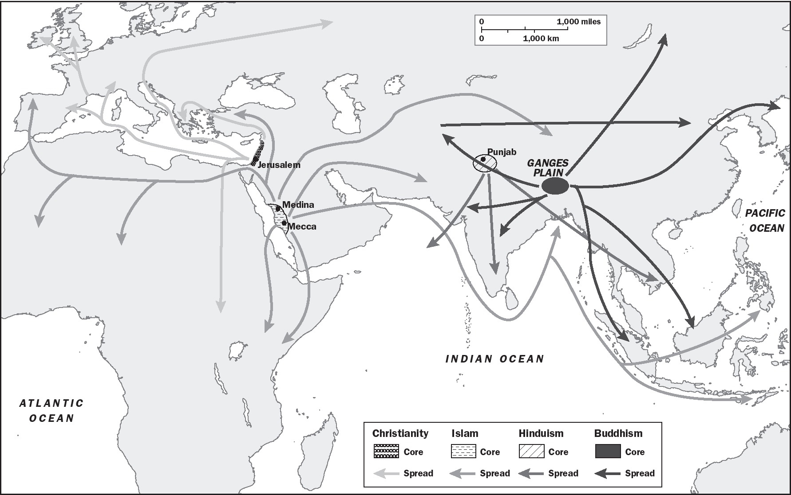

Chapter 4
UNIT 1
The Global Tapestry
c. 1200 to c. 1450
The first unit in AP® World History: Modern covers developments from c. 1200 CE to c. 1450 CE, and focuses on processes involving governments and cultures.
For the exam, the term governments means more than just what kings did. Think connections. Governments promoted and resisted religions and the arts, depending on the point of view of the leaders, but they all usually encouraged trade and technology. And of course, all governments tried to retain power.
Political and social trends from before this era greatly influenced later generations, including societies today. Spurred by the increase in trade, religions continued to spread over a wide area in this era, creating longterm effects in places far from their points of origin. Faith offered comfort in difficult times, created social stability and structure, and provided authority to political leaders.
I. |
DEVELOPMENTS IN EAST ASIA (c. 1200 to c. 1450) |
A.SPREAD OF CHINESE CULTURAL TRADITIONS
1.Confucianism and filial piety continued. The teachings of Confucius are fundamentally about maintaining order in society, even in times of political chaos, such as after the fall of a dynasty. Filial piety is the unquestioned respect for the family’s father. He in turn respects his superiors, who respect theirs, all the way up to the emperor. If everybody “knows their place” (think of Mulan) in this highly patriarchal society, it will continue through good and bad times. Confucianism did not promise a heavenly reward for following these rules, but was a philosophy for this life.
2.Buddhism originated in India and spread to China along the Silk Roads. As it spread, it changed to fit local conditions, something all major religions do. The original form, Theravada Buddhism, was less popular in East Asia than Mahayana Buddhism, which emphasizes more hope for eternal life.
3.By 1200, Neo-Confucianism had become popular in China. It blended concepts from Buddhism, the ancient Chinese Daoist beliefs, and Confucianism into one, making Neo-Confucianism more of a religion than only a philosophy.
4.Foot binding of women’s feet regained popularity and continued into the early 20th century. Historians say foot binding was another sign of Confucian patriarchy.
5.Diasporic communities, consisting of Christians, Jews, and Muslims, grew in China. These groups arrived along trade routes, becoming merchants and government officials and assuming roles necessary to establish nodes of commerce and state-sponsored commercial infrastructure.
6.Confucianism, Neo-Confucianism, and forms of Buddhism spread to Korea, Heian Japan, and Vietnam and greatly influenced those countries’ cultures, including their leaders.
7.Chinese forms of government, literature, and art spread to Korea, Heian Japan, and Vietnam during this era.
B.SONG DYNASTY, CHINA (960–1279)
1.China had the most advanced civilization in the world: the largest cities, the strongest economy, and the latest technologies. Kaifeng and Hangzhou were prosperous trade and government centers, each with at least a million residents.
2.China’s economy soared based on massive exports to East Africa, Arabia, and South and Southeast Asia. Chinese craftsmen produced exquisite porcelain (“china”), iron and steel, and, of course, tea and silk.
3.The greatest boon to agriculture was the introduction of fast-growing Champa rice from Vietnam. This new crop provided for a rapidly expanding population.
4.China invented paper money during this era and had a policy of taxing all imports, sometimes at very high rates.
5.Technology advanced during the Song dynasty. Gunpowder, wood block printing, the compass, and an expanded Grand Canal are just some of the many inventions and innovations developed by the Song civilization.
II. |
DEVELOPMENTS IN DAR AL-ISLAM (c. 1200 to c. 1450) |
A.INFLUENCE OF ISLAM, JUDAISM, AND CHRISTIANITY IN AFRICA AND ASIA
1.Islam originated in Arabia in the 7th century and expanded rapidly west across North Africa into Spain and West Africa, north into Turkey, south along the east coast of Africa (the Swahili states), and east into South and Central Asia, both peacefully and by force. Islam saw several political changes in the era c. 1200–c. 1450. See below.
2.Christianity retreated in the region of Turkey, supplanted by Islam, but gained in Spain, reasserting its dominance over Islam by c. 1450.
3.Jews lived in scattered communities throughout Afro-Eurasia (“the diaspora”). Merchants, scholars, artisans, and government officials were some jobs Jews held. Sadly, however, with acceptance came persecution. Countries in Europe sought to expel Jews in this era, sometimes out of religious rivalry and other times out of fear that Jews were somehow responsible for the Black Death.
B.NEW ISLAMIC POLITICAL STATES
1.The Abbasid caliphate (i.e., a Muslim political state under religious rule) began declining before c. 1200 and then fell when Mongols sacked the capital city of Baghdad in 1258. Other Muslim governments rose in this era.
2.The Mamluks were a professional army established by the Abbasids. The Mamluks later set up a sultanate (region headed by a Muslim ruler) in Egypt. They also moved into Central Asia and established the Delhi Sultanate, which ruled much of South Asia, and repelled Mongol invasions.
3.As the Abbasids declined, Turkish groups from Central Asia moved into Southwest Asia and formed the Muslim Ottoman Empire in Turkey in the late 13th century and rapidly expanded.
4.Sufism, a mystical form of Islam, grew along with the new governments, ranging from Eastern Europe to North Africa into Central and South Asia.
C.MUSLIM ADVANCES IN TECHNOLOGY AND SCIENCE
1.Muslim scholars were among the world’s leaders in medicine and astronomy. They preserved Greek and Roman literature and made several advances in mathematics during this era.
2.The most famous example of Muslim scholarship was the Abbasid Empire’s “House of Wisdom” in Baghdad, a center of philosophy, science, and engineering that was destroyed in the Mongol invasion of 1258.
3.Cultural transfers in Muslim and Christian Spain included mathematics and knowledge of Greek and Roman literature, which had been preserved by Muslim scholars.
III. |
SOUTH AND SOUTHEAST ASIA (c. 1200 to c. 1450) |
A.HINDUISM, ISLAM, AND BUDDHISM SHAPED SOCIETIES
1.The Bhakti movement in Hinduism became popular in South Asia. It marked a shift in devotion to a personal god. Some historians believe this movement was a response to the growing influence of Islam in South Asia at this time.
2.As referenced above, Sufism in Islam rapidly expanded in South and Central Asia. Native Islamic sultanates were established in Sumatra by the 15th and 16th centuries. The trade city of Malacca was also a center of Islam and a major conduit for the spread of the faith in Southeast Asia.
B.NEW HINDU AND BUDDHIST STATES
1.The Vijayanagara Empire was a Hindu-led state that arose in the southern half of South Asia, as a counter to Muslim expansion to the north. At the same time, smaller Hindu states, the Rajput kingdoms, occupied parts of South Asia.
2.Meanwhile, the Buddhist Srivijaya Empire in Southeast Asia, which had dominated trade there for centuries, was conquered in the late 1200s.
IV. |
STATE BUILDING IN THE AMERICAS (c. 1200 to c. 1450) |
A.AS IN AFRO-EURASIA, STATES CONTINUED AND DEVELOPED IN THE AMERICAS
1.The best known states in the era c. 1200 to c. 1450 were the Mayan city-states, Mexica (the Aztecs), the Inca Empire, and Cahokia. Note that the AP® exam considers the Maya an illustrative example of the period even though the once-powerful Mayan city-states, based in what is today’s Mexico, had been abandoned by 900 CE.
2.In Central Mexico, many aspects of the Toltec culture, like religion and architecture, were adopted by the Mexica, also known as the Aztecs. Their king was considered to be a god.
3.The Mexica had an extensive empire in central Mexico, with Tenochtitlan as its capital. The empire grew through conquest of neighbors whom they ruled indirectly via a tribute system.
4.The Incas had an enormous empire that ran along the west coast of South America, primarily along the Andes Mountains. Their most famous features were extensive road and bridge systems and a government-controlled distribution system of goods and agriculture. As in the Mexica Empire, their king was considered divine.
5.Cahokia was located near today’s St. Louis, Missouri. It was a complex of buildings and earthen mounds from the Mississippian culture. Cahokia was a major trade and religious center. The Cahokian people used the Mississippi River to conduct long-distance trade as far as the Gulf of Mexico. They were effective urban planners and farmers, but lacked a writing system.
V. |
STATE BUILDING IN AFRICA (c. 1200 to c. 1450) |
A.EMERGENCE OF TWO EMPIRES
1.Great Zimbabwe was a major civilization in southeast Africa. It featured impressive stone buildings and flourishing trade. Great Zimbabwe traded directly with social groups in the interior of Africa and with cities along the Swahili Coast, such as Kilwa. There is also evidence they traded indirectly with South Asia and China.
2.Ethiopia was an empire in the northern part of East Africa led by dynasties of Christian kings, who sought help from European Christian rulers to fight Muslim incursions into the empire. Ethiopia was a major cultural and economic crossroads in the region. Its most famous feature is the “rock churches” built during the reign of the Emperor Lalibela.
VI. |
DEVELOPMENTS IN EUROPE (c. 1200 to c. 1450) |
A.EUROPE FRAGMENTED POLITICALLY AND RELIGIOUSLY
1.The pandemic bubonic plague known as the Black Death in Afro-Eurasia in the 14th century hit Western Europe the hardest. The political and cultural power of the Catholic Church in Western Europe was weakened.
2.The feudal system of lords, manors, and serfs began to break down, leading to the freeing of serfs by c. 1500.
3.Historically, Europe was similar to South Asia in that it had rarely been unified under one government.
4.The Hundred Years War between Britain and France contributed to the fall of feudalism, and strengthened the rise of a single monarch in each country.
5.The Holy Roman Empire in Central Europe continued as a loose union of several small kingdoms. Italy was politically fragmented as well.
B.RELIGIOUS FRAGMENTATION EXPANDED IN EUROPE
1.While the Catholic Church lost prestige and power in the rest of Western Europe, in Portugal and Spain the “Reconquista” of Catholicism over Islam continued and was completed just before 1500.
2.Although Islam lost ground in Spain and Portugal, its influence increased in Eastern Europe. Orthodox Christianity, which split from Roman Catholicism in the 11th century, remained predominant.
Be prepared to compare (similarities and differences) the processes of the development, maintenance, and decline of states in this era (c. 1200 to c. 1450). For example: To what extent were leaders in the Americas and China similar in the ways they used religion to justify their rule? To what extent was the spread of Christianity and Islam similar in this era?
Origins and Diffusion Routes for Selected Religions to c. 1200 (Christianity, Islam, Hinduism, and Buddhism)
